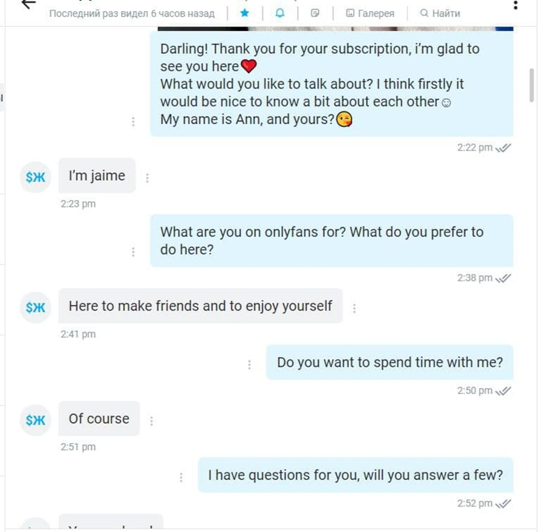

1.

2.

Здесь предоставлен пример удачного диалога. Этот диалог полностью проведен по скрипту и привел к успешной продаже. Подробнее о скриптах расскажу в третьем модуле.

Напоследок хочу подчеркнуть одну важную вещь! Данный курс обучает работе на Fansly, однако ты можешь использовать знания и для работы на OnlyFans, сайты идентичные. Интерфейс слегка различается, но имея знания по Fansly, разобраться с OnlyFans самостоятельно – очень легко!